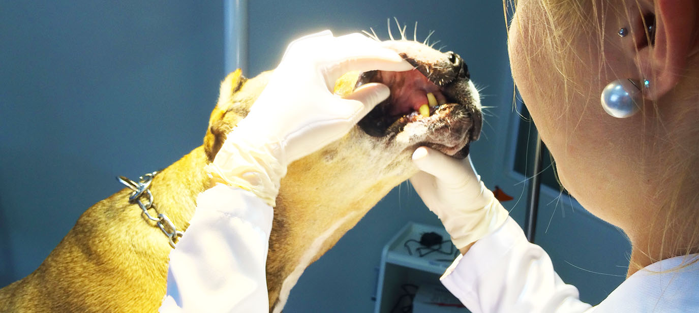
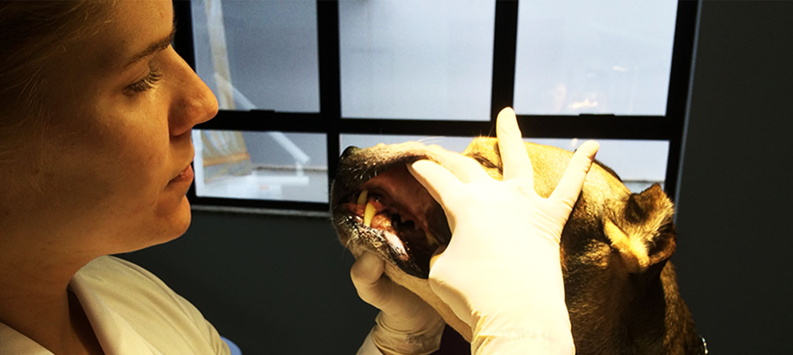
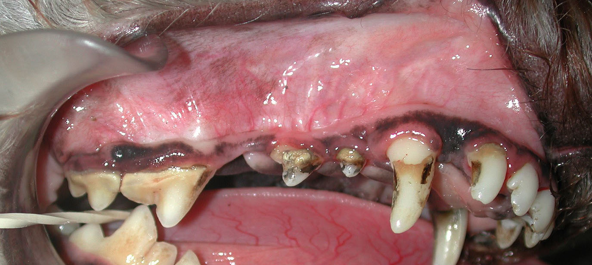
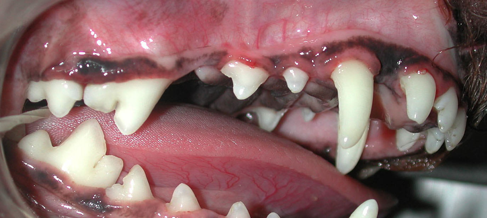
Como saber se seu pet precisa de um dentista veterinário para limpeza dentária ou se está na hora de realizar um tratamento periodontal?
Quando falamos em "limpeza" dentária, nos referimos aquela boquinha que tem doença periodontal porém não teve perda de estruturas, ou seja, tem mau hálito, gengivite, mas não tem perda óssea ou mobilidade dos dentes.
Nesse caso realiza-se a limpeza de todos os dentes com ultrassom e polimento de todas as faces do dente com taça de borracha e material abrasivo para recuperar a superfície lisa dos dentes.
No tratamento periodontal além de realizar a limpeza com o ultrassom, realiza-se radiografia dos dentes afetados, se necessário extrações, raspagem subgengival (raiz) e polimento das raízes expostas e polimento dos dentes.
Devemos sempre lembrar que as bactérias que ficam na boca podem migrar para órgãos importantes como rins, fígado, coração e pulmão, interferindo no seu funcionamento.
Sentiu "bafinho"?? Sangrou o ossinho?? Está chatinho pra comer?? É hora de procurar um dentista veterinário !!!
Para saber mais sobre a diferença desses 2 tratamentos procure um profissional ESPECIALIZADO em odontologia veterinária que irá avaliar o seu filhote e indicar o melhor tratamento.
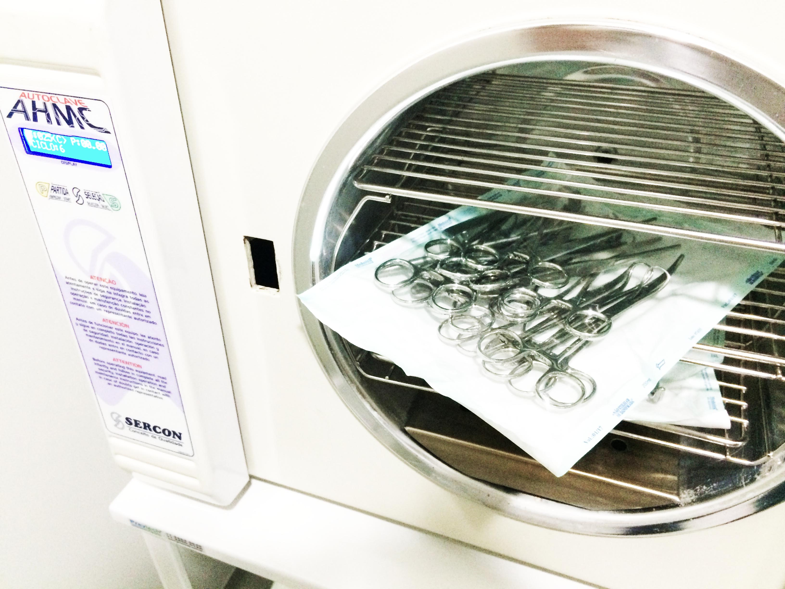
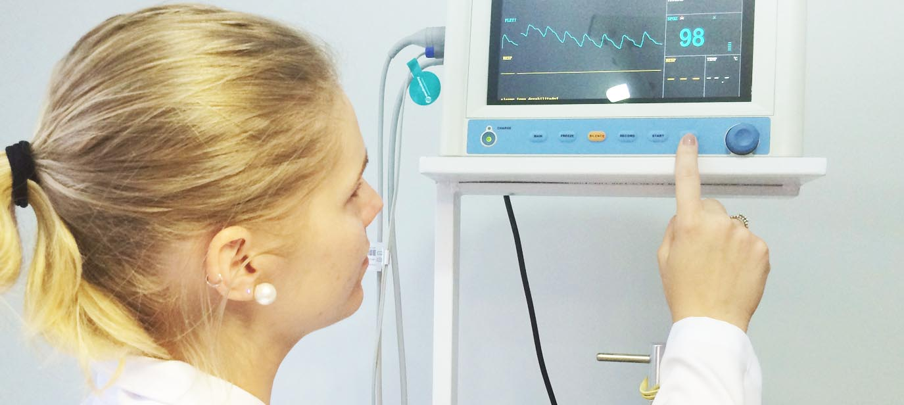
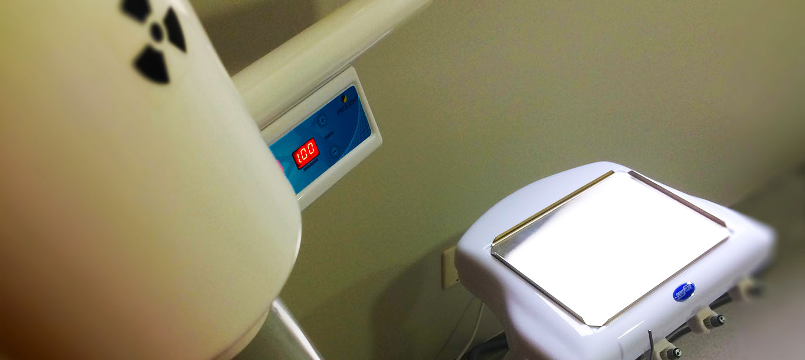
A Vetplace realiza todos os tipos de procedimentos cirúrgicos em pequenos animais. Desde procedimento mais simples como biópsia, até procedimentos maiores como castração, cirurgias em cavidade abdominal, cavidade oral, ortopedia entre outras. Todos os nossos procedimentos são realizados com anestesia inalatória para maior segurança e conforto do seu melhor amigo.
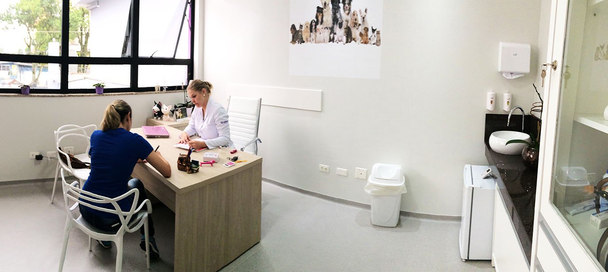

A Clínica médica é a área mais importante da medicina veterinária. O clínico é o responsável por instituir o melhor tratamento ao seu amiguinho. Procedimento de vacinação, controle de parasitas e acima de tudo a triagem para encaminhamento quando necessário a um especialista. Normalmente acompanha-se o animal desde o nascimento até ficarem velhinhos, e é nossa obrigação indicar sempre o que for mais correto e seguro para melhor qualidade no tratamento. Sendo assim, contamos com diversas especialidades para atender seu melhor amigo com excelência.
Diferença entre anestesia inalatória e dissociativa
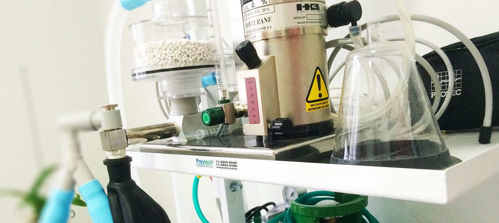

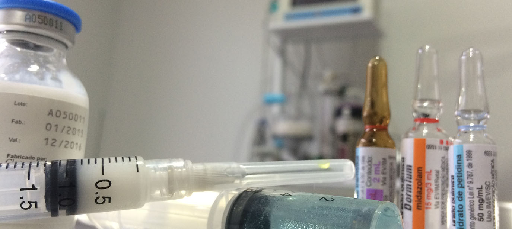
A anestesia dissociativa deve ser utilizada em procedimentos rápidos que não causam dor de grau moderado ou alto, como por exemplo exame clínico de animais bravos, realização de exames radiográficos em pets desconfortáveis ou para indução da anestesia inalatória de pequeno e grande porte com aplicação local ou não.
Ela não é recomendada para animais com alterações neurológicas devido ao seu poder convulsivo e por aumentar a pressão intracraniana. Em animais com problemas cardíacos causa aumento da frequência cardíaca e pressão arterial e em animais com glaucoma aumenta pressão intraocular. Além disso, o retorno anestésico é demorado e pode ser necessárias várias reaplicações durante o procedimento. O animal passa por uma fase de excitação e salivação muito maior em relação à inalatória e o cão deve ser acompanhado pelo médico veterinário até ficar acordado.
A anestesia inalatória é uma anestesia geral no qual o animalzinho dorme profundamente e apresenta analgesia e miorrelaxamento profundos. Ela é bastante segura e realizada por anestesista qualificado com monitor multiparâmetro. Para que seja realizada com segurança é necessária realização de exames pré-operatórios como hemograma completo, função renal e hepática e exames cardiológicos.
Pode ser utilizada em qualquer procedimento, principalmente em cirurgias de grande porte, sendo bem mais segura e o retorno anestésico muito mais rápido. Além disso, no pós-operatório, o animal apresenta menos excitação e é bastante segura em animais com problemas cardíacos, neurológicos e renais, pois não provoca efeito tóxico nesses órgãos e não aumenta a pressão arterial, intracraniana e ocular.
Em vista de todos os benefícios e baixo risco, a Vetplace trabalha somente com anestesia inalatória para realização dos procedimentos, contando com profissional especializado na área que vai acompanhar e dar toda atenção ao seu melhor amigo !!!
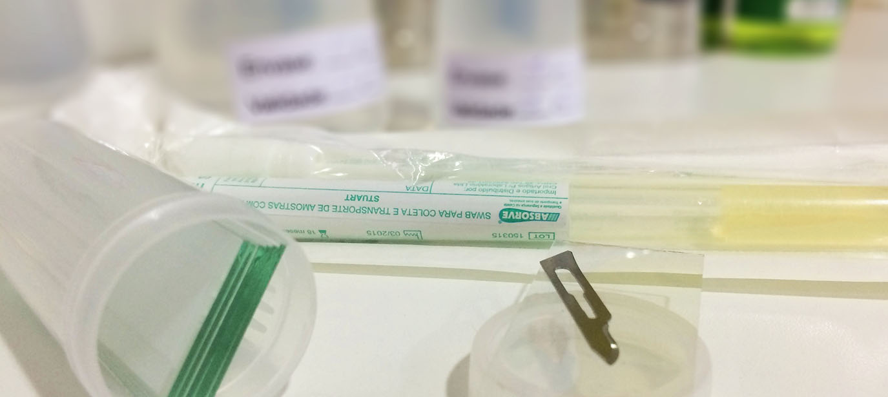
A dermatologia veterinária é uma das especialidades mais praticadas na rotina da clínica de pequenos animais, representando aproximadamente 30 a 40% de todos os casos presenciados rotineiramente. Isso se deve ao fato de que a maioria das vezes alterações na pele são as que mais chamam atenção e faz com que os proprietários rapidamente procurem o médico veterinário.
Doenças alérgicas, parasitárias, infecções fúngicas, tumores e alterações cutâneas bacterianas são as afecções mais frequentemente observadas.
É de extrema importância salientar que a maioria das doenças de pele precisam ter um acompanhamento por longo período e muitas vezes por toda vida do animal, além de saber lidar com todas essas alterações de pele requer muita paciência e dedicação.
Por isso é muito importante o acompanhamento com um veterinário ESPECIALIZADO EM DERMATOLOGIA veterinária, e aqui na Vetplace a Dra. Daniela Falcão estará sempre pronta para atendê-los.